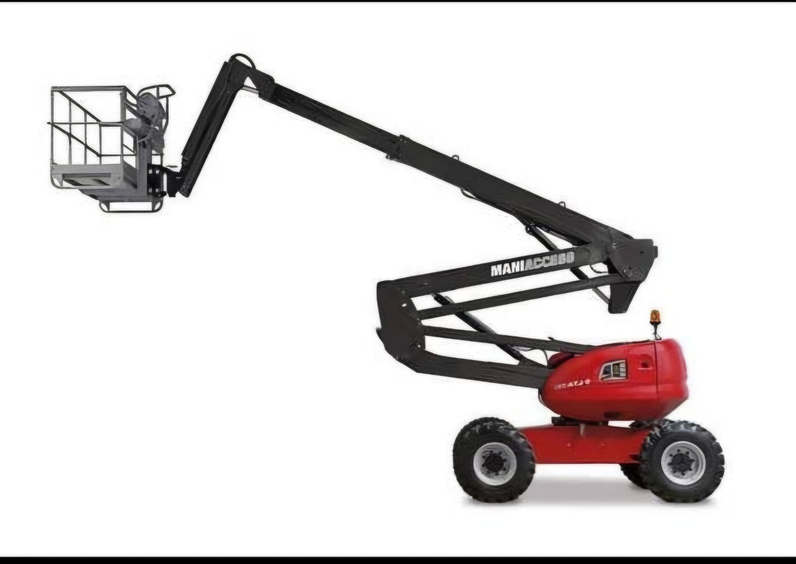

Oferta Wynajmu
Wynajem podnośników koszowych Tarnów
Bezpieczne i efektywne prace na wysokości w Tarnowie i okolicach. Oferujemy wynajem podnośników przegubowych (zwyżek) marek Genie oraz Manitou. Idealne do trudno dostępnych miejsc.

Podnośniki przegubowe (zwyżki)
Podnośniki przegubowe to najpopularniejszy wybór do prac na budowach, halach produkcyjnych czy przy montażu konstrukcji stalowych. Dzięki ramieniu przegubowemu pozwalają dotrzeć nad przeszkodami, zapewniając ogromną elastyczność i zasięg boczny.
- Idealne na trudny teren - napęd 4x4.
- Zasięg boczny ułatwiający omijanie przeszkód.
- Gwarancja bezpieczeństwa i regularne przeglądy UDT.